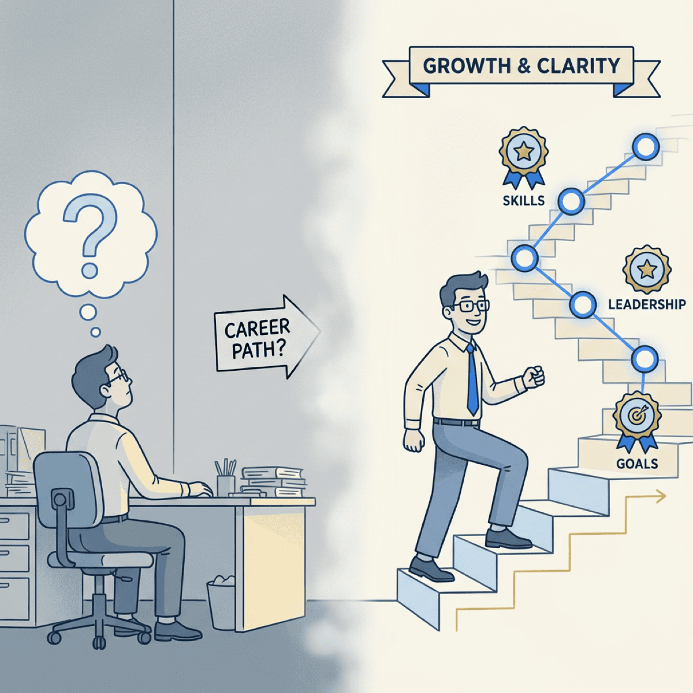

Why Your Best Engineers Keep Leaving (And It’s Not About the Money)

TL;DR
- 69% of engineers prioritize growth over salary—yet most retention strategies focus on compensation
- Replacing one engineer costs $67K-$180K plus 12 months of reduced productivity
- The three things that actually keep engineers: growth visibility, technical autonomy, and impact visibility
- Mid-market companies can outcompete FAANG (Facebook, Amazon, Apple, Netflix, Google) by offering ownership and direct business impact
Here’s a stat that should change how you think about retention: 65% of engineers who leave cite compensation as a factor, but only 29% say it’s the primary reason.
The real driver? 69% rank career growth as their #1 consideration when evaluating jobs.
Yet most retention strategies start and end with salary adjustments. Executives throw money at the problem, watch their best people leave anyway, and wonder what went wrong.
The answer isn’t complicated. It’s just not what most companies want to hear.
Yes, engineers still matter
Before we talk retention, let’s address the elephant in the room: with AI writing code, do you even need engineers anymore?
The short answer: more than ever.
Software engineering jobs are projected to grow 17% through 2033—that’s 327,900 new roles. A Harvard study of 62 million workers found that when companies adopt GenAI, junior developer employment drops 9-10%, but senior employment barely budges.
Why? Because AI handles routine coding. Humans handle architecture, judgment calls, compliance, and security. 84% of developers now use AI tools—the role is shifting from “coders” to “composers” who orchestrate AI and make the calls machines can’t.
Your senior engineers aren’t being replaced. They’re being amplified. Losing them now means losing your ability to leverage AI effectively.
The real cost of getting this wrong
Engineer turnover is expensive. More expensive than most executives realize.
Tech industry turnover runs 13-18% annually, with specific roles like embedded engineers seeing rates above 20%. During competitive hiring markets, it’s not unusual to lose a fifth of your team each year.
The replacement cost? 0.75x to 2x annual salary per engineer. For a mid-level developer earning $90K, that’s $67,000 to $180,000 in recruiting, onboarding, and lost productivity.
But the salary math understates the problem. New hires take 12 months to reach full productivity. That’s a year of reduced output, increased code review burden on existing team members, and institutional knowledge walking out the door.
And here’s the part that should worry you: 69% of engineers stay less than two years. By the time they’re fully productive, they’re already thinking about their next move.
The companies winning the talent war aren’t paying the most. They’re making engineers feel like owners.
— Clarke Bishop
Why money isn’t the answer
I’ve watched executives try to solve retention with compensation. It rarely works.
The data backs this up. PayScale’s 2023 research found that 65% of engineers cite pay as a factor in leaving—but only 29% list it as the primary reason. Glassdoor’s research shows that once compensation reaches market rate, additional increases have diminishing returns on retention.
Meanwhile, 51% of engineers chose career growth opportunities over salary, benefits, and remote work when asked what matters most.
Compensation is table stakes. You need to be at market rate or you’ll lose people to companies that are. But above that threshold, throwing more money at the problem just delays the inevitable.
If you’re matching market rates and still losing people, you’re solving the wrong problem.
The three things that actually keep engineers
After working with engineering teams for 25 years, I’ve seen the same pattern: the companies that retain their best people focus on three things.
Growth visibility
Engineers need to see a path forward. Not just a career ladder—a trajectory.
The question every engineer is asking: “What will I learn here that I can’t learn elsewhere?”
If you can’t answer that clearly, neither can they.
Formal mentorship programs address this systematically. But the approach varies by level. Entry-level engineers want skills. Mid-level engineers want advancement. Senior engineers want strategic impact.
The common thread: they need to see their future, not guess at it.
Technical autonomy
The State of DevOps Report found that high-autonomy teams significantly outperform others. It’s not just about productivity—it’s about retention.
Spotify calls it “aligned autonomy”—direction without micromanagement. Netflix calls it “freedom and responsibility.” Whatever you call it, it means trusting engineers to make decisions about frameworks, architecture, and approaches.
This includes tools. 58% of engineers have left or considered leaving because of technical debt and outdated tooling. When you force engineers to fight their tools every day, they start looking for companies that don’t.
You can’t buy loyalty. But you can earn it by trusting people with real decisions.
— Clarke Bishop
Impact visibility
Engineers need to see how their work matters to the business.
MIT Sloan found that organizations with healthy technical cultures have 67% higher retention. Part of that is impact visibility—engineers understanding which customers use their features, which business metrics move because of their code.
Engineers with access to cutting-edge tech are 48% less likely to leave within a year. But “cutting-edge” isn’t just about new frameworks. It’s about solving problems that matter.
Ask yourself: “What problems have we solved that we couldn’t have solved without this person?” If you can’t answer that, they probably can’t either.
What high-retention companies do differently
The companies winning at retention share a pattern.
Spotify reports 94% engineer satisfaction. Their approach: squad autonomy, “Fail-Fikas” where teams celebrate learning from mistakes, and they ditched OKRs entirely. They punish micromanagement and politics, not failure.
Netflix eliminated formal performance reviews. Instead, they use continuous feedback and a “Keeper Test”—managers ask themselves whether they’d fight to keep each team member. They employ dedicated productivity engineers whose job is removing friction from developers’ work.
The pattern: trust engineers with decisions, remove bureaucratic friction, make growth explicit.
Here’s what mid-market companies miss: you can offer something FAANG can’t. At Google, an engineer might ship a feature that 0.01% of users see. At your company, they can ship features that move business metrics directly. That ownership is a retention advantage—if you make it visible.
A practical retention diagnostic
Before you adjust salaries, assess where you actually stand. Ask these questions:
Growth
- Can every engineer articulate their 12-month growth trajectory?
- Do you have formal learning budgets?
- Is mentorship systematic or accidental?
Autonomy
- How many approvals to ship a feature?
- Who decides tech stack for new projects?
- When was the last time you said “just do it your way”?
Impact
- Do engineers see business metrics?
- Do they know which customers use their features?
- Do they ever attend customer calls?
If you answered “no” to more than half of these, compensation adjustments won’t fix your retention problem.
The bottom line
Your best engineers aren’t leaving for money. They’re leaving for growth, autonomy, and impact.
The companies winning the talent war aren’t the ones paying the most. They’re the ones making engineers feel like owners—giving them clear growth paths, trusting them with real decisions, and showing them how their work matters.
Pick one dimension where you’re weakest. Make one visible change this quarter. Your retention rate will tell you if it’s working.
Building an engineering team that stays? Let’s talk about how fractional CTO support can help you create the culture that retains top talent.